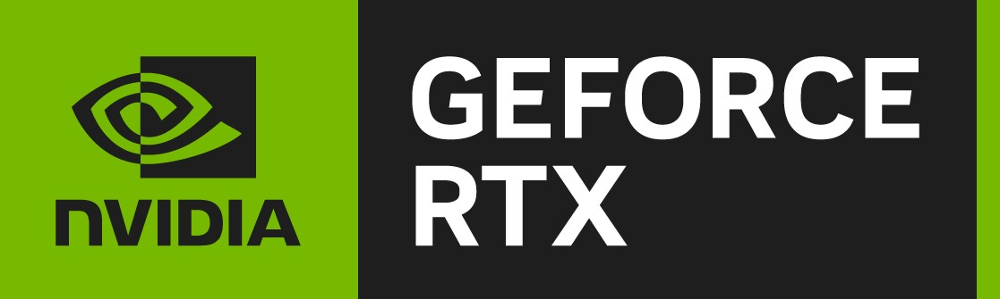

AMD Ryzen 7 7800x3D
AsRock B650M HDV/M.2 Motherboard
32GB RAM Corsair Vengeance 5600MHz
EVGA Nvidia RTX 3060 Ti XC
Seasonic G12 750W PSU
ASUS AP201 Case
Arctic Freezer III 240mm ARGB
Razer Mamba Wireless
Redragon K552 White RGB Keyboard
Monitors:
Acer QG241Y 24" 165Hz Gaming Monitor
Samsung C24F390
Philips 242S1
